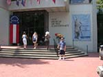
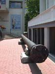
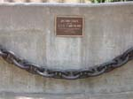
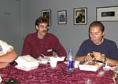
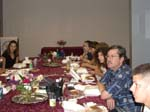
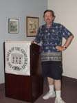

| page 3 of 5 |
| A Full Day in Richmond 8/3/2001 |
UCLA at Gettysburg Journal |
| page 3 of 5 |
|  |
 |
 |
| Don stands in front of the Museum of the Confederacy as Emily, Sarah and Roy prepare to enter. We were treated to an extradinary guided tour of the special exhibit on Robert E. Lee. | Section of the propeller shaft of the famous iron-clad VIRGINIA (aka Merrimac) on display outside the Museum of the Confederacy. The White House of the Confederacy is at right. | Anchor chain from the U. S. S. Cumberland, first victim of an ironclad warship in history. Sunk March 8, 1862 by the C. S. S. Virginia. |
|  |
 |
 |
| After the tour, the museum served us lunch and our tour guide, Robert Hancock, the museum's curator, talked about what was involved in gathering such a significant collection of Lee artifacts. | Hearing the "behind the scenes" story on mounting a major exhibition was a rare opportunity for the UCLA students. | Don strikes a pose. After lunch we had plenty of time to tour the museum's other exhibits. My personal favorite was John Bell Hood's uniform. |
| The rear portico of the Whitehouse of the Confederacy (photographer is facing north.) 5 year old Joseph Davis fell to his death from the porch corner at right in April 1864. | Front entrance to the Whitehouse of the Confederacy. Curator Hancock also gave us a tour of the mansion. It has been restored inside to its 1860's appearance. | Prof. Waugh and Don walked to Saint John's Episcopal Church where Patrick Henry delivered his "Give me liberty or give me death" speech on 23 March 1775 during the 2nd Virginia revolutionary convention. Photo by JW. |